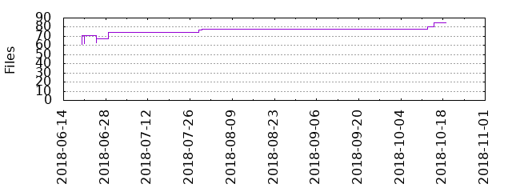

Files
General
Activity
Authors
Files
Lines
Tags
Total files
85
Total lines
1162
Average file size
638.65 bytes
File count by date

Extensions
Extension
Files (%)
Lines (%)
Lines/file
j2
1 (1.18%)
13 (1.12%)
13
md
1 (1.18%)
5 (0.43%)
5
py
1 (1.18%)
217 (18.67%)
217
pyc
1 (1.18%)
43 (3.70%)
43
pyo
1 (1.18%)
43 (3.70%)
43
rst
19 (22.35%)
212 (18.24%)
11
yaml
61 (71.76%)
710 (61.10%)
11